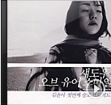

"사람 사이에 안 보이는 '벽'이 있다는 말은 보편적으로 들을 수 있지만 '담'은 참 신선했어요. 고등학교 시절, 김윤아의 첫 번째 솔로 앨범을 사서 듣고는 '서정적인', '철학', '고찰'이라는 단어를 떠올릴만한 소녀가 되었어요. '그래, '벽'보단 '담'이 힐끗힐끗 쳐다보기 쉽고, 함부로 넘어가기도 어렵지'하며 말이에요."
'담'은 1분간의 미리듣기로 제공됩니다.